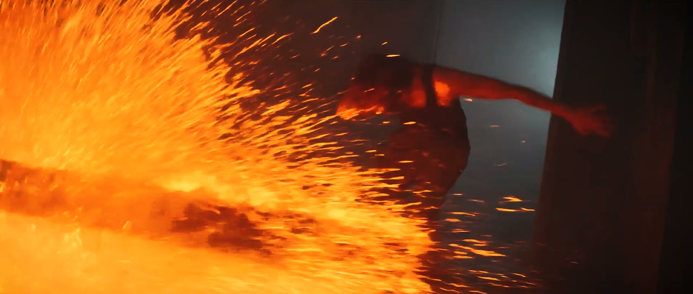

AI-Native Film Studio
영화의 크기를 정하는 것은
예산이 아니라, 상상력입니다
폭풍의 바다, 불타는 공장, 미래의 도시 — 물리적 한계가 지워온 장면들을 SAW는 데이터와 AI 파이프라인으로 만듭니다.
폭풍의 바다, 불타는 공장, 미래의 도시 — 물리적 한계가 지워온 장면들을 SAW는 데이터와 AI 파이프라인으로 만듭니다.
촬영 없이 시작해서,
촬영으로 완성합니다.
데이터 확보부터 최종 믹싱까지 — 전 공정을 자체 파이프라인으로 수행하고, 그 파이프라인을 구동하는 제작 시스템을 직접 개발합니다. 이것은 구호가 아니라, 이미 광고 제작 현장에서 구동 중인 작동 방식입니다.
SAW는 AI로 영화를 만드는 제작사입니다. 데이터 확보부터 최종 믹싱까지의 전 공정을 자체 파이프라인으로 수행하고, 그 파이프라인을 구동하는 제작 시스템을 직접 개발합니다.


시나리오에서 완성본까지, 5단계 파이프라인으로 장편·시리즈를 제작합니다. SAW의 본업입니다.

웹소설·웹툰 등 원천 스토리를 발굴하고 세계관과 캐릭터를 구체화해 영상화 가능한 IP로 패키징합니다.

영화에서 검증한 동일 파이프라인으로 광고·브랜드 영상을 제작합니다. 이미 실제 광고 현장에 도입돼 있습니다.

워크플로우 시스템 Flowmark, 대본 자동화 Scripture Engine 등 제작 기술을 직접 개발·자산화합니다.

1–3단계는 순차로 진행하고, 4단계의 실사 촬영·색보정·음향은 세 갈래로 갈라져 동시에 진행한 뒤 최종 믹싱에서 합류합니다. 이 병렬 구조가 전체 제작 기간을 단축합니다.
인물·의상·장소·소품을 이미지 데이터로 확보합니다. 배우는 레퍼런스 촬영 1회 — 이후 전 장면의 기준값이 되는 아이덴티티 데이터셋으로 변환됩니다.

단 한 프레임도 생성되기 전에, 작품의 시각 언어가 먼저 정해집니다. 컬러와 조명의 방향을 확정하고 스토리보드를 작업합니다.

수십 개의 AI 엔진이 동시에 컷을 생성하고 편집을 병행합니다. 디테일은 뒤로, 흐름을 먼저 — 작품 전체의 형태를 먼저 완결합니다.

러프 컷 하나를 기준 삼아 실사 촬영·색보정·음향 작업이 동시에 움직입니다. 떨어져 진행해도 결과가 어긋나지 않는 구조입니다.

세 갈래로 진행된 영상·색·음향이 하나로 합류합니다. 컷 경계·인물·조명의 일관성을 프레임 단위로 점검해 생성 컷과 실사 컷의 경계를 지웁니다.


기다리지 않고, 직접 만들었습니다. 흩어져 있는 전 세계의 AI 엔진을 하나의 캔버스로 모아 — 나란히, 동시에 지휘하는 노드 기반 워크플로우 시스템입니다.
개별 엔진의 구성과 조합 로직은 SAW의 핵심 영업기밀로, 상세 기술 사양은 NDA 체결 후 공개합니다.
비정형 텍스트를 즉시 촬영 가능한 표준 대본으로 자동 변환하는 시스템입니다. 요약·생성이 아니라 구조 변환 — 원작의 내용을 지어내거나 줄이지 않고, 극작 이론에 따라 재구성합니다.
2개 층, 2개 호리존트를 갖춘 전용 스튜디오를 상시 사용합니다. 인물·의상 데이터 촬영부터 크로마키 실사 촬영까지 외부 대관 없이 자체 일정으로 진행합니다.



SF·레이싱·액션·청춘·광고까지 — 대규모 세트·로케이션·군중 없이, 전 컷을 자체 데이터와 Flowmark 파이프라인으로 완성했습니다.
SF 레이싱
레이싱 액션
액션 청춘
청춘 드라마
드라마 광고밀리터리
광고밀리터리 사극
사극콘텐츠IP 기획 조직 조이엘리스토리를 함께 운영하며, 보유 IP와 네트워크가 SAW로 이어집니다.
비주얼 스튜디오 오버미디어아트 · OVJ를 함께 운영하며, 제작 인프라와 기술 자산이 SAW로 이어집니다.
법인 설립 · Flowmark 인프라 완성 · 데모 필름 제작 · 광고 현장 도입
영화 프로젝트 착수 · 광고·브랜드 콘텐츠 수주 확대
장편·시리즈 라인업 · IP 파트너십 · Scripture Engine 파일럿
제작 시스템의 외부 공급 · 글로벌 공동 제작

다음 장면을,
함께 만들 준비가 되어 있습니다
주식회사 스토리에이아이웍스 — 경기도 고양시 일산동구 노첨길24번길 34-3, 1층